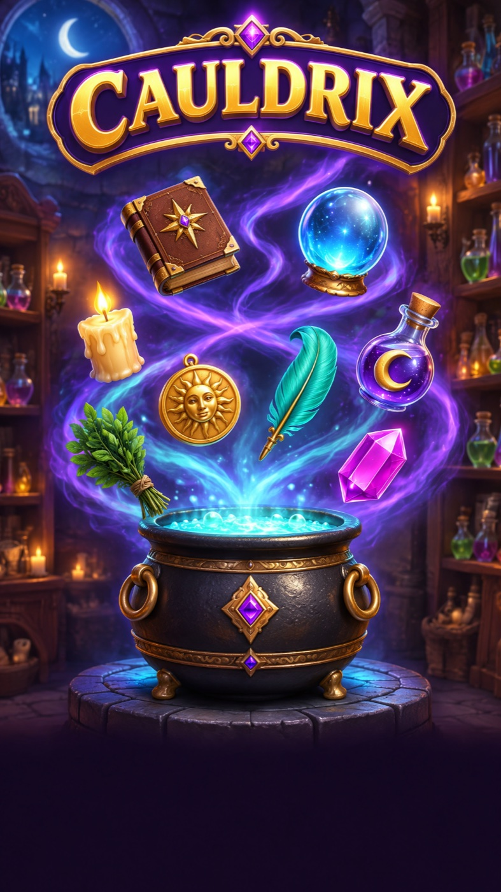
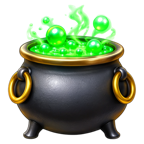
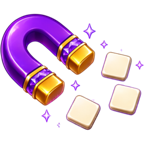
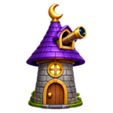
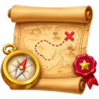
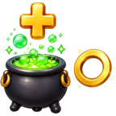

Match three.Master the cauldron.
Cauldrix is a tile-matching puzzle set in an alchemist’s tower. Clear the board, cast spells and use the stars you earn to restore the tower.
- Levels
- 800
- Worlds
- 10
- Spells
- 3
- Languages
- 9

How to play
-
Pick an uncovered tile
Tap a tile with nothing stacked on top of it. It moves into one of the cauldron’s seven slots.
-
Match three of a kind
Three identical tiles clear a set and release essence. Quick matches build combos that earn more essence.
-
Leave room in the cauldron
Plan which tiles to pick next. If the slots fill before you make a match, the cauldron overflows.
-
Clear the board
Remove every tile to win coins and a star. Spend stars on restoration tasks to unlock new worlds.
Game features

800 levels
Work through layered boards across 16 chapters. Frozen tiles appear in tougher stages and thaw one layer when you make a match.

Three spells
Use Pull to move tiles to the shelf, Wind to rearrange the board, and Fire to burn a matching set. Spend the essence you collect to cast them.

Tower restoration
Use stars to repair gates, bridges, fountains and other structures in the Tower tab. Finish the tasks in a world to open the next one.

Ten themed worlds
Each world has its own scenery and tiles. The world map shows what you’ve unlocked and the objects you’ll see there.
Daily gift and rewards
Claim 100 coins every 24 hours. When available, an optional reward video can give you 40 coins or an extra life in the relevant screen.

An eighth slot
Activate the extra-slot booster before a level to make room for one more tile during that attempt.
- The Alchemist's Garden
- Fairy Forest
- Crystal Lake
- Magic Bazaar
- Frost Palace
- Volcano Forge
- Star Observatory
- Dragon Valley
- Cloud Kingdom
- Candy Kingdom
Play in nine languages
Change the game language any time in Settings.
- English
- Türkçe
- Deutsch
- Español
- Français
- Português
- Русский
- Italiano
- 日本語
Help & support
How do I play?
Tap uncovered tiles to move them into the cauldron. Match three identical tiles to clear them. If all slots fill up without a match, the cauldron overflows.
Can I play offline?
You can play levels offline. Ads, reward videos and store services need an internet connection.
Where is my progress saved?
Levels, coins, stars and inventory are saved on your device. Cauldrix has no account or built-in cloud sync. Moving to another device or reinstalling can result in lost progress.
What does Play Ad-Free remove?
It removes ads between levels. Optional reward videos remain available when you choose to watch one.
How do I restore a purchase?
In Shop, scroll to Restore purchases and use the same Apple or Google account. Availability depends on the store and app version. The store can restore Play Ad-Free, while spent items and currency are consumable. If a purchase is missing, reopen the game while online and contact us if it still does not appear.
How do I start over?
Choose Reset progress in Settings. This clears levels, coins, inventory and tower progress. Your settings and Play Ad-Free entitlement are kept.
Contact us
Need a hand with a level, an ad or a purchase? Include your device model, OS version and the app version shown in Settings. For purchases, include the date and order reference if available. Keep passwords and card details out of your message.